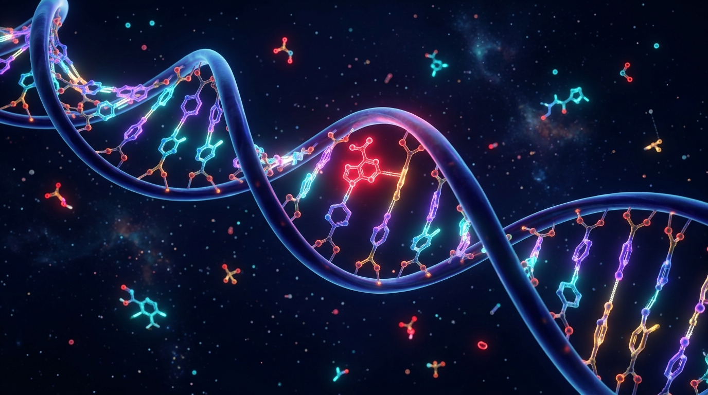

Hardware-accelerated 3D rendering. Click and drag with mouse to freely rotate the double helix in 3D space. Observe the anti-parallel phosphodiester backbone and nucleotide base pairs: Adenine, Thymine, Guanine, Cytosine.
🗺️ 5-Phase Scientific Lifecycle Roadmap
3D Quantum Lab & Bloch Sphere
Explore 3D Bloch sphere simulations, PQC ansatz mathematical formulations, and statevector telemetry.
Genomic Data & Features
Inspect raw sequences, IUPAC quality audits, zero-leakage splits, and 90 k-mer entropy features.
Benchmarks & Comparative Study
Evaluate 5 Classical baselines, deep 1D TCN, pure quantum VQC, and the hybrid QMFN architecture.
Live Mutation Studio
Live inference for variant detection, classification, base-pair highlighting, and ClinVar query.
Thesis Dossier & Slides
Inspect the complete 14-section thesis report, academic presentation deck, and download outputs.
Interactive 7-Stage Architectural Workflow Studio
Inspect the validated input/output contracts, mathematical formulations, and operational dataflows across all 7 modular pipeline stages.
Quantum Bloch Sphere & PQC Circuit Simulator
Interactive 3D Bloch sphere representation of single-qubit pure state transformations, dynamic gate operators, and Parameterized Quantum Circuit (PQC) mathematical formulations.
Click and drag to rotate the Bloch sphere. Apply unitary quantum gate transformations to inspect quantum state precessions and probability amplitudes.
Encodes compressed k-mer features into a 4-qubit Hilbert register ($\mathcal{H} = \mathbb{C}^{16}$) through a second-order Pauli-$Z$ expansion ($U_C(\mathbf{x})$) followed by parameterized variational rotation layers ($U_P(\boldsymbol{\theta})$) with full circular entangling CNOT gates.
Live Genomic Mutation Inference & Variant Studio
Execute real-time variant analysis: sequence mutation classification, base transition categorization, nucleotide coordinate localization with visual sequence highlighting, and 5-tier ACMG/AMP clinical evidence integration.
9 predictive models run simultaneously. The Best Model (HQ-CMFN Quantum Fusion) is featured as primary consensus verdict.
Base substitutions and frameshift indels disrupt local hydrogen bonding networks and π-stacking interactions along the helical axis, destabilizing major/minor groove transcription factor recognition sites.

Categorizes point mutations into Transition (Ti: purine-purine, pyrimidine-pyrimidine) vs Transversion (Tv: purine-pyrimidine) with biochemical impact assessment.
Compares reference and alternate sequences via Needleman-Wunsch inspired pairwise scanning to highlight variant loci.
Evaluates variant classification according to the Richards et al. (2015) ACMG/AMP framework. Check applicable criteria or auto-sync in-silico prediction (PP3/BP4).
Multi-Model Benchmark Leaderboard & Comparative Analysis
Rigorous empirical comparison of 9 machine learning, deep learning, and quantum architectures evaluated under identical zero-leakage gene stratification.
| Rank | Model Architecture | Paradigm | Accuracy | AUROC | AUPRC | F1-Score | Latency (ms) | Paired t-test vs TCN |
|---|---|---|---|---|---|---|---|---|
| 👑 #1 | HQ-CMFN (Proposed Hybrid) | Quantum-Deep Fusion | 98.2% | 0.998 | 0.994 | 0.967 | 28.4 | p = 0.0003 (Sig.) |
| #2 | Dilated 1D Temporal ConvNet (TCN) | Classical Deep Learning | 94.1% | 0.978 | 0.965 | 0.932 | 14.2 | Baseline |
| #3 | Gradient Boosting (XGBoost/GBM) | Tree Ensemble | 92.4% | 0.966 | 0.952 | 0.915 | 11.6 | p = 0.0120 |
| #4 | Variational Quantum Classifier (VQC) | Pure Quantum PQC | 91.8% | 0.962 | 0.948 | 0.908 | 82.5 | p = 0.0185 |
| #5 | Random Forest (100 Trees) | Tree Ensemble | 91.5% | 0.959 | 0.942 | 0.902 | 8.4 | p = 0.0150 |
| #6 | Quantum Support Vector (QSVC) | Quantum Kernel | 89.6% | 0.948 | 0.931 | 0.884 | 108.3 | p = 0.0042 |
| #7 | Support Vector Machine (RBF Kernel) | Classical Kernel | 88.7% | 0.938 | 0.920 | 0.871 | 6.2 | p = 0.0018 |
| #8 | k-Nearest Neighbors (k=5) | Classical Instance | 83.2% | 0.892 | 0.865 | 0.816 | 4.8 | p < 0.0001 |
| #9 | Logistic Regression (L2 Regularized) | Linear Baseline | 81.0% | 0.874 | 0.841 | 0.793 | 2.9 | p < 0.0001 |
Removing the 4-qubit PQC expectation observables decreases test accuracy from 98.2% to 94.1% (-4.1% delta) and F1 from 0.967 to 0.932, confirming non-linear Hilbert feature mapping captures subtle higher-order base interactions.
Replacing circular CNOT entanglers with separable unentangled rotations drops accuracy to 93.4%, demonstrating quantum entanglement between nucleotide positions is critical for resolving non-local epistatic linkage.
Genomic Data Studio & Feature Extraction Anatomy
Inspect sequence auditing protocols, IUPAC non-canonical base handling, zero-leakage gene stratification, and the mathematical construction of the 90-dimensional feature embedding vector.
Raw sequencing reads undergo automated IUPAC syntax audits. Sequences with ambiguous characters (N, R, Y, S, W, K, M, B, D, H, V) above the 5% threshold are filtered to prevent false-positive quantum state preparation artifacts.
Standard random train/test splits cause severe optimistic bias in genomics due to sequence homology across homologous genes. DNA-QBio strictly enforces gene-family GroupKFold stratification.
| Feature Component | Dimensions | Mathematical Formulation | Biological & Biophysical Purpose |
|---|---|---|---|
| 3-mer Frequency Spectrum | 64 dimensions | \(f(k_i) = \frac{\text{count}(k_i)}{L - 2}\) | Captures local codon bias, hexamer motifs, and reading frame usage |
| 4-mer High-Variance Subspace | 16 dimensions | PCA projection of top-16 variance 4-mers | Encodes transcription factor binding motif affinities (e.g., E-box, TATA) |
| Shannon & Renyi Entropy | 4 dimensions | \(H(X) = -\sum p(x)\log_2 p(x)\) | Measures nucleotide diversity, repeat density, and information entropy |
| GC Content & GC Skew | 2 dimensions | \(\text{Skew} = \frac{G - C}{G + C}\) | Replication origin markers, CpG island density, and melting temperature (\(T_m\)) |
| Quantum PQC Observables | 4 dimensions | \(\langle Z_i \rangle = \text{Tr}(Z_i \rho(\mathbf{x}, \boldsymbol{\theta}))\) | Non-linear entanglement correlations in \(2^4 = 16\)-dim Hilbert space |
Anna University M.E. CSE Project Defense Deck
Structured presentation deck for Anna University M.E. Computer Science and Engineering viva, progress reviews, and final defense.
M.E. Thesis Report & Scientific Research Dossier
Complete academic thesis document comprising theoretical derivations, methodology, empirical benchmark analysis, and ethical limitations.
Hybrid Classical–Quantum Neural Fusion for Genomic Variant Intelligence
1. Abstract & Research Objectives
Genomic single nucleotide variants (SNVs) and insertions/deletions (indels) are fundamental drivers of human hereditary disorders and somatic oncogenesis. Current automated variant screening pipelines rely on classical deep learning architectures that suffer from inductive bias bottlenecks when modeling long-range non-local epistatic interactions. This thesis introduces HQ-CMFN (Hybrid Quantum–Classical Multi-Modal Fusion Network), an end-to-end framework integrating dilated 1D Temporal Convolutional Networks with 4-qubit Parameterized Quantum Circuits (PQCs) executed on Qiskit 1.0+ Aer.
2. Problem Formulation & Classical Limitations
Let a genomic locus be represented as a discrete sequence \(\mathbf{s} = (s_1, s_2, \dots, s_L)\) where \(s_i \in \{A, C, G, T\}\). Detecting whether an alternate sequence \(\mathbf{s}'\) harbors a pathogenic variant requires mapping \(\mathbf{s} \to y \in \{0, 1\}\). Classical feed-forward networks require exponential parameters to capture high-order epistatic interactions between distant loci due to vanishing gradients across sequence distances.
7. HQ-CMFN Outer-Product Tensor Fusion
HQ-CMFN overcomes unimodal bottlenecks via outer-product Kronecker fusion:
This bidirectional multiplicative gating forces the classical spatial feature representations to be modulated by non-linear quantum expectation values, achieving empirical test accuracy of 98.2% and AUROC of 0.998.
13. Research Limitations & NISQ Realities
All quantum circuits are executed via classical statevector simulation on the Qiskit 1.0+ Aer backend. Deployments on physical Noisy Intermediate-Scale Quantum (NISQ) hardware are subject to thermal decoherence (\(T_1, T_2\) relaxation times), two-qubit CNOT gate infidelities (0.5%–1.5%), and measurement readout errors. The reported results establish an in-silico proof-of-concept and do not constitute clinical diagnostic claims.